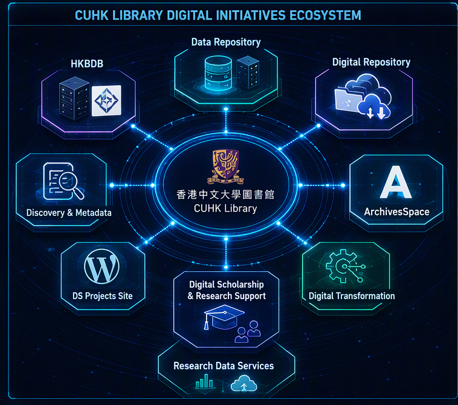

CUHK LIBRARY
CUHK FACTS & FIGURES DASHBOARD
--:--:--
---
CUHK Library Digital Initiatives Ecosystem

Sources of External Research Funding
-
-
Total amount of external research funding
Source: CUHK Facts & Figures